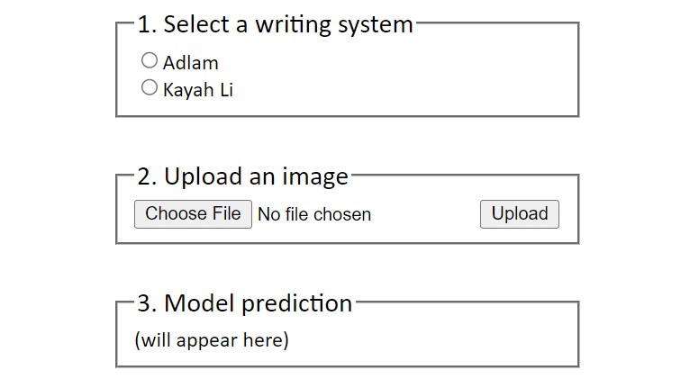
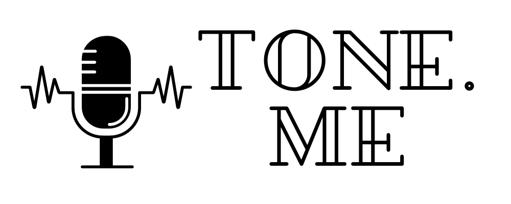

Descry: OCR for low-resource writing systems
https://github.com/dariakryvosheieva/descry-ocr I developed text recognition engines for two new alphabets: Adlam, used to write the Fula language spoken in West Africa, and Kayah Li, used for dialects of the Kayah continuum in Myanmar.
The pipeline for each alphabet consists of a CRAFT text detector, which detects bounding boxes of words in an image, and a CRNN sequence recognizer, which identifies the word (sequence of characters) in each bounding box. To train the models, I generated a total of 16,250,000 synthetic images by drawing random Unicode strings on different backgrounds with Pillow.
Users can interact with the models via a Flask app: you can select an alphabet, upload an image containing text in that alphabet, and have the text recognized.
Tone.me: a Mandarin Chinese tone corrector
https://github.com/tone-me/tone-me Tone.me is a web app that helps learners of Mandarin Chinese improve their pronunciation of tones.
It uses a Wav2Vec2 Transformer finetuned for tone classification to identify tones in a speech recording and compare them to the correct tones in the words that the user intended to say. The finetuning dataset consisted of syllables extracted from the AISHELL-3 corpus with the help of stable-ts. The app uses the Next.js web framework.
Built in collaboration with Riddhi Bhagwat, Chris Ge, Anshul Gupta, and Katherine Guo for the AIM Labs program at MIT.